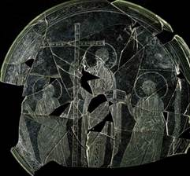
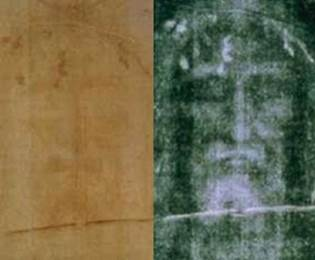

CÓ NÊN TREO HÌNH CHÂN DUNG CHÚA JESUS TRONG NHÀ?
Trần Đình Tâm
Trong nhà của nhiều con cái Chúa ngày nay cũng như các vị lãnh đạo Hội Thánh, có treo hình chân dung của Chúa Jesus. Chân dung của Chúa có thể là một bức tranh vẽ hay được điêu khắc trên gỗ hay đá mài; hình Chúa được treo ở những nơi trang trọng như phòng khách, phòng làm việc.
Có một số vấn đề mà các con cái Chúa nên biết rõ về hình Chúa Jesus như sau:
1. Đức Chúa Trời có ý muốn lưu truyền chân dung của Chúa Jesus?
Từ khi Chúa Jesus giáng sanh cho đến khi Ngài trưởng thành và thi hành chức vụ trên đất, không có bất cứ một Sứ Đồ nào, môn đồ nào, hay bất cứ một người nào nghĩ đến việc phát họa hay ghi khắc chân dung của Chúa Jesus để lưu truyền lại cho các thế hệ tiếp theo. Vì Kinh Thánh không ghi chép lại sự kiện lưu truyền hình ảnh Chúa Jesus, nên chúng ta tin chắc rằng không có một bản phát họa (điêu khắc) nào về chân dung của Chúa Jesus ngay trong thời Chúa Jesus còn trên đất. Trên tất cả, Đức Chúa Trời đã tể trị vấn đề nầy, Ngài không muốn cho nhân loại sau nầy chú ý đến hình dung bên ngoài của Chúa Jesus, mà muốn nhân loại chú ý Chúa Jesus là ai và Ngài đã làm gì khi còn trên đất. Chúng ta ghi nhận các tác giả sách Phúc Âm như Ma-thi-ơ, Mác, Giăng đều không có một lời nào mô tả về diện mạo của Chúa Jesus. Lu-ca 2:52 không phải là câu Kinh Thánh mô tả chân dung Chúa Jesus.
Vài nhân vật trong Cựu Ước như Đa-vít được mô tả “Mặt người hồng hồng, con mắt xinh lịch, và hình dung tốt đẹp” (I Sa-mu-ên 16:12) hay Áp-sa-lôm: “Vả, trong cả Y-sơ-ra-ên chẳng có một người nào được khen chuộng về nhan sắc mình như Áp-sa-lôm; nơi mình người, từ bàn chân cho đến chót đầu, chẳng có tì vít gì hết.” (II Sa-mu-ên 14:25). Nhưng không có một lời nào mô tả Chúa Jesus trong khi Ngài sống trên đất.
Chỉ có một lời duy nhất là lời tiên tri của Ê-sai về Chúa Jesus: “Người chẳng có hình dung, chẳng có sự đẹp đẽ; khi chúng ta thấy người, không có sự tốt đẹp cho chúng ta ưa thích được.” (Ê-sai 53:2). Lời tiên tri cho thấy hình dạng của Chúa Jesus sẽ không như người ta cố ý mong đợi và gán cho (theo quan niệm của con người về một nhân vật nổi tiếng nào đó) như là … đẹp trai và có sức hấp dẫn thu hút người nhìn như tài tử điện ảnh!! Lời tiên tri cho biết Đấng Mê-si có hình dáng và diện mạo thông thường như bao nhiêu người đàn ông Do Thái lúc ấy. Chính vì thế, khi Giu-đa dẫn những người lính đến bắt Chúa Jesus trong vườn Ghết-sê-ma-nê, Giu-đa phải cho họ một dấu hiệu để người lính phân biệt Chúa với những người khác: Đó là cái hôn. Điều nầy chứng minh rằng Chúa Jesus không có gì đặc biệt so với những người đàn ông Do Thái khác.
2. Tranh vẽ chân dung của Chúa Jesus.
Hình vẽ chân dung Chúa Jesus chỉ xuất hiện từ khoảng năm 1090. Từ lúc đó về sau, nhiều họa sĩ đã vẽ chân dung của Chúa Jesus, hình vẽ theo trường phái Tin Lành khác với hình vẽ theo trường phái Công Giáo La-mã. Điều quan trọng mà chúng ta cần biết là: Người ta vẽ chân dung Chúa Jesus hoàn toàn dựa vào sự tưởng tượng của họ và cảm xúc của họ về Chúa Jesus, vì thế các hình vẽ chân dung Chúa Jesus khác nhau: Nước da ngăm hoặc trắng; tóc dài chấm vai hoặc ngắn; tóc thẳng hoặc xoăn; màu tóc nâu đen, vàng hay màu hung; râu dài hay râu ngắn được tỉa xén cẩn thận; khuôn mặt gầy guộc hay đầy đặn; có vầng hào quang chung quanh hay không có v.v… Cũng có thể hình Chúa Jesus được vẽ theo mẫu của một nhân vật đã từng đóng vai Chúa Jesus trong một bộ phim kể về cuộc đời Chúa Jesus. Cho dù bất cứ họa sĩ nào vẽ hay vẽ theo trường phái nào đi nữa thì tất cả các hình vẽ ấy không phải là hình ảnh thật sự của Chúa Jesus.
Sau đây là vài tranh vẽ Chúa Jesus, lưu ý hình đầu tiên là hình được đa số con cái Chúa trong Hội Thánh truyền thống chọn để treo trong nhà.
Ngoài các tranh vẽ trên đây, còn nhiều tranh vẽ Chúa Jesus với nhiều phiên bản khác nhau, tất cả đều không phải là hình ảnh thật của Chúa Jesus.
Nếu không phải là hình ảnh thật sự của Chúa Jesus thì tại sao con cái Chúa treo hình không phải là Chúa Jesus trong nhà và nghĩ rằng đó là hình Chúa Jesus?
Có thể có người cho rằng hình Chúa Jesus treo trong nhà chỉ là hình ảnh “tượng trưng” mà thôi. Tuy nhiên, trong trường hợp nầy, hình vẽ để tượng trưng thật không hợp lý. Hãy tưởng tượng rằng bạn có người thân yêu trong gia đình qua đời, bạn muốn treo hình của người ấy trong phòng, nhưng người ấy không để lại hình ảnh hay di họa nào, có thể nào bạn chấp nhận treo hình của một người khác và bạn nói rằng hình nầy tượng trưng cho người thân yêu của bạn?!
3. Một khám phá của ngành Khảo Cổ:
Các nhà khảo cổ người Tây Ban Nha công bố đã tìm thấy một cái đĩa cỗ thủy tinh thuộc thế kỷ thứ 4 sau Công Nguyên, chiếc đĩa và các mãnh vỡ được tìm thấy tại Castulo ở Andalusia, Tây Ban Nha. Trên mặt đĩa có khắc họa hình Chúa Jesus cùng với hai Sứ Đồ Phi-e-rơ và Phao-lô. Hình Chúa Jesus khác rất nhiều so với những gì mà người ta gán cho Chúa bấy lâu nay: Tóc xoăn ngắn, không để râu.

Hình Chúa Jesus trên đĩa thuộc thế kỷ thứ 4
Không có gì chứng minh được rằng hình Chúa Jesus trên cái đĩa là đúng với sự thật.
Ngoài sự phát hiện nêu trên, người ta còn bàn nhau về bí mật của “tấm vải liệm Turin”, là tấm vải trùm lên mặt Chúa Jesus trong khi xác Chúa được khâm liệm. Người ta đồn đoán rằng tấm vải liệm đã được các nhà khoa học phân tích “đồng vị Carbon 14” vào năm 1988. Kết quả phân tích đồng vị Carbon cho thấy tấm vải có in hình của Chúa Jesus. Có người cho rằng câu chuyện “tấm vải liệm Turin” chỉ là sự thêu dệt: Không ai chứng minh được tấm vải đó chính là tấm vải trùm lên mặt Chúa Jesus. Có những thông tin có vẻ như được khoa học chứng minh, nhưng đó chỉ là một hình thức lừa dối tinh vi nhằm thuyết phục người khác tin theo.

Bên trái: Tấm vải liệm “linh thiêng” Turin!
Bên phải: Hình Chúa Jesus “hiện” trên nền vải!
4. Chúa Jesus có mái tóc dài hay ngắn?
Hình chân dung Chúa Jesus treo trong nhà các con cái Chúa đều là hình với mái tóc dài. Không có bằng chứng nào cho thấy Chúa Jesus từng để tóc dài. Trái lại, có những yếu tố khiến chúng ta có thể tin rằng trong thời của Chúa Jesus, người đàn ông để tóc ngắn.
+ Đức Chúa Trời quy định luật cho người na-xi-rê: không được cạo đầu nhưng phải để tóc mọc dài cho đến khi nào sự hứa nguyện hoàn tất (Dân số Ký 6:5). Sau khi xong thời gian làm Na-xi-rê, người đó phải cạo đầu. Như vậy, việc để tóc dài chỉ dành riêng cho người Na-xi-rê mà thôi, và chỉ trong một khoảng thời gian mà thôi. Chúa Jesus không ở trong trường hợp đó.
+ Sách tiên tri Ê-xê-chi-ên 44:20 cho thấy các thầy tế lễ được quy định: “Chúng nó sẽ không cạo đầu, và không để tóc dài, nhưng sẽ cắt tóc.”
+ Chúng ta cũng đọc thấy trong I Cô-rinh-tô 11:14: “Chính lẽ tự nhiên há chẳng dạy cho anh em biết đờn ông để tóc dài thì lấy làm hổ thẹn sao?”
+ Khải Huyền mô tả hình dáng các tà linh xuất hiện trong thời kỳ sau cùng: “nó có tóc giống tóc đàn bà.” (Khải Huyền 9:8)
+ Người ta có thể tìm thấy những bức tượng điêu khắc người đàn ông có mái tóc ngắn trong thời kỳ đế quốc La-mã cai dân Do Thái.
Tóm lại, chúng ta có nên treo hình chân dung Chúa Jesus mà chúng ta biết đó không phải là Chúa Jesus, và Chúa Jesus lại để tóc dài?
Tháng 11, 2014